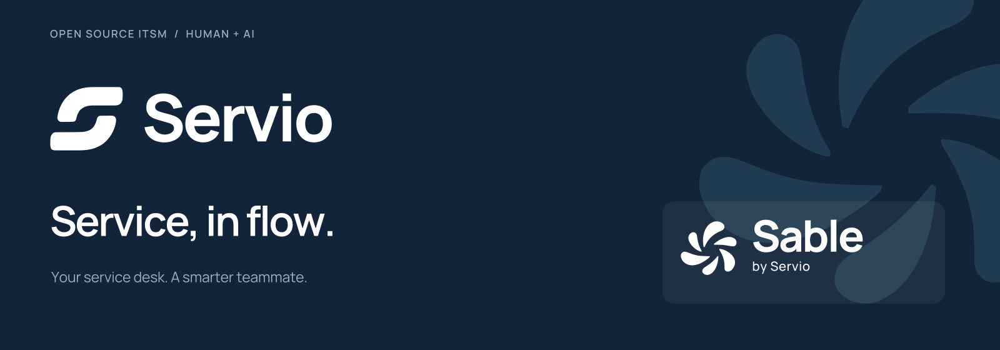
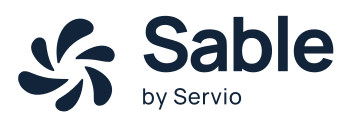
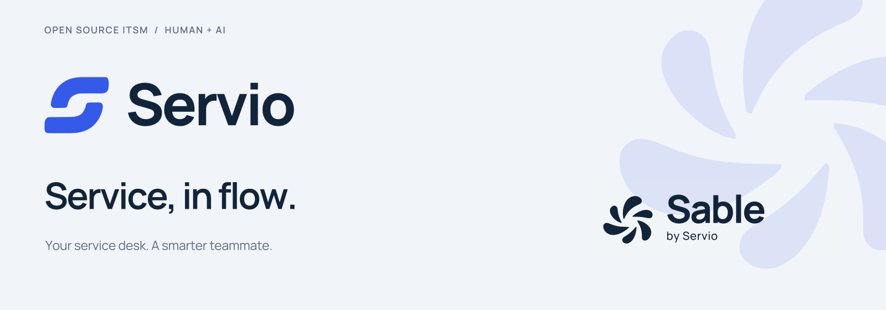
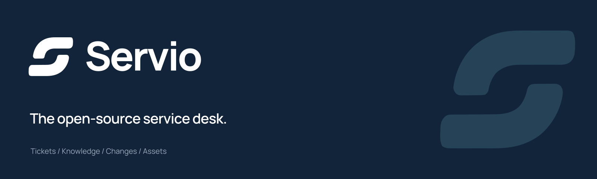
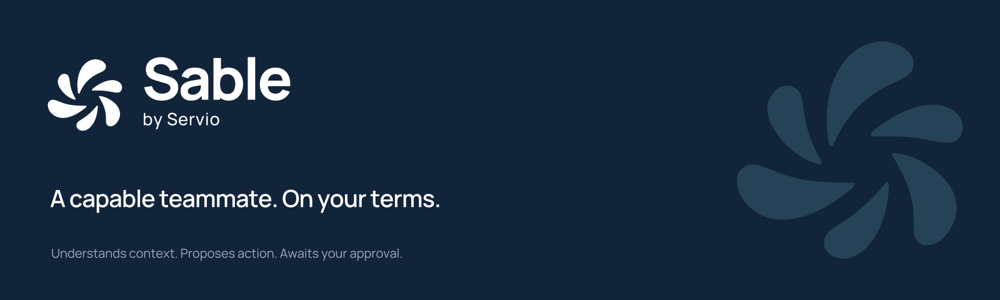

Servio + Sable.
Eine klare Produktmarke und ein eigenständiger KI-Kollege. Hier liegen die finalen Vektor-Master, Rasterexporte und Anwendungsregeln.


Die beiden Marken.
Horizontale, vertikale und reine Wortmarken stehen in Primärfarbe, invers, Schwarz und Weiß bereit. Alle SVGs enthalten echte Pfade.











Bereit für die README.
Gemeinsamer Markenbanner und eigene Banner für Servio und Sable. Helle und dunkle Ausgaben, jeweils als SVG und PNG in einfacher und doppelter Auflösung.











1200 × 630 px · helle Variante


1200 × 630 px · helle Variante

Symbole, Avatare und App-Icons.
Transparente Symbole bis 2048 px, quadratische Kacheln bis 1024 px, PWA- und Touch-Icons sowie ICO- und ICNS-Dateien.


Farbe und Schrift.
Manrope.
Calm. Capable. Clear.
Die Markenschrift ist im Paket enthalten. Logo- und Bannertexte sind für den zuverlässigen Austausch als Vektorpfade angelegt.
Konsistent weiterarbeiten.
Acht Seiten zu Markenarchitektur, Logovarianten, Schutzraum, Mindestgrößen, Farbrollen, Typografie und Anwendungen.